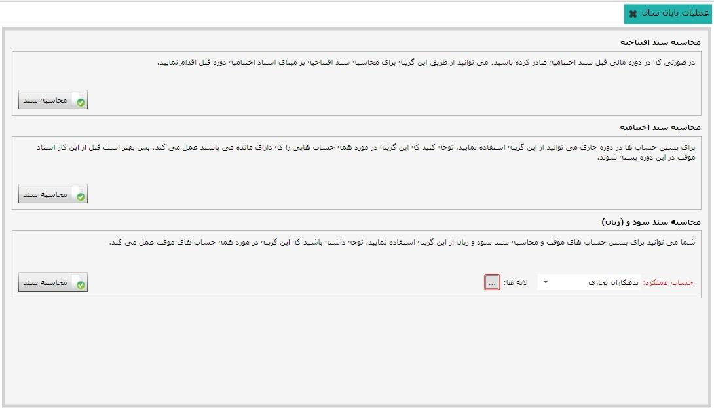

صفحه مربوط به این منو به شکل زیر است:
همان طور که در بالا مشاهده می کنید در این صفحه سند افتتاحیه، سند اختتامیه و سند سود و زیان محاسبه می شوند. توضیحاتی که در خود صفحه برای هر قسمت آورده شده است کافی است.

نکته ای که در مورد محاسبه سند سود و زیان وجود دارد این است که باید از باکس «حساب عملکرد»، حسابی را که می خواهید سود و زیان با آن بسته شود انتخاب نمایید. در صورتی که حساب عملکرد انتخابی دارای لایه باشد، فیلد انتخاب لایه برای حساب عملکرد انتخاب شده فعال می شود و شما می توانید لایه مورد نظرتان را نیز انتخاب نمایید.
با توجه به توضیحات موجود در شکل صفحه قبل، در عملیات پایان سال ترتیب عملیات موجود در شکل از پایین به بالا می باشد، به این شرح که ابتدا باید حساب های موقت با استفاده از محاسبه سند سود و (زیان) بسته شوند، آن گاه سند اختتامیه برای دوره مالی جاری صادر شود و سپس سند افتتاحیه را برای دوره مالی جدید بر مبنای سند اختتامیه دوره قبل محاسبه نمایید.